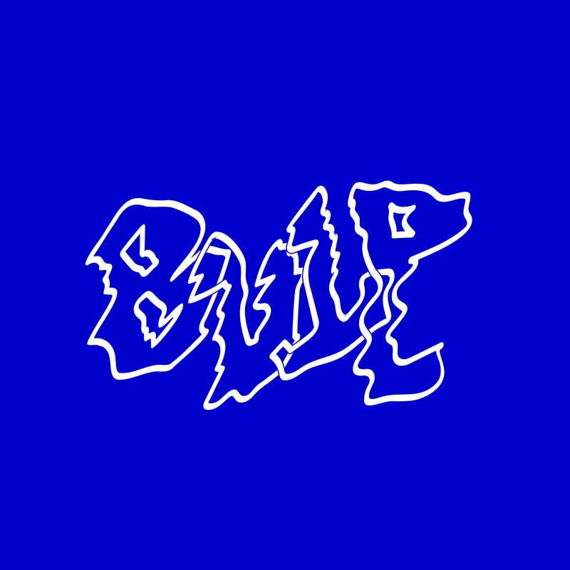

we want to propose,
to cherish that what is already.
A way of showing that being create holds value and connects each other.
We give the possibility to make each others creativity visible.
That is 
A moment where everyone can light up the streets from the safe perimeters of their house.
21/11/2020 // 19:00-22:00